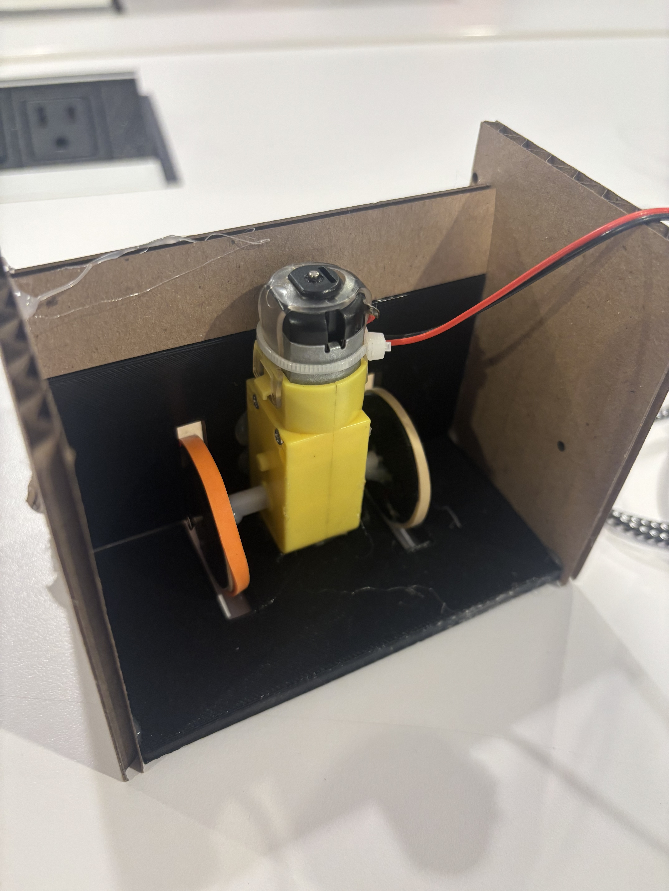
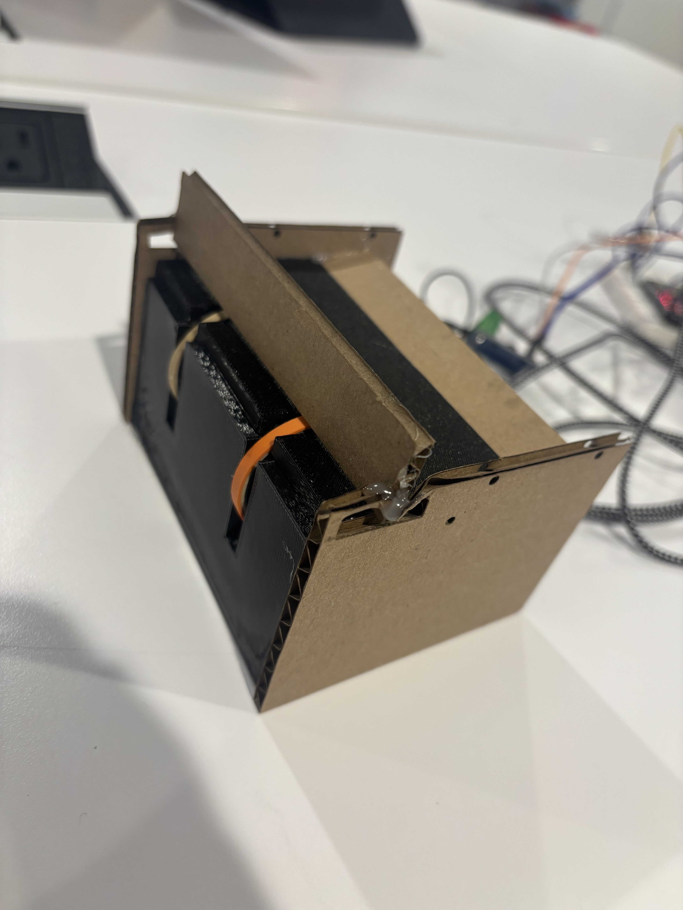
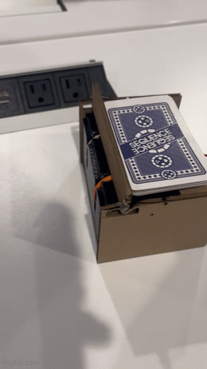
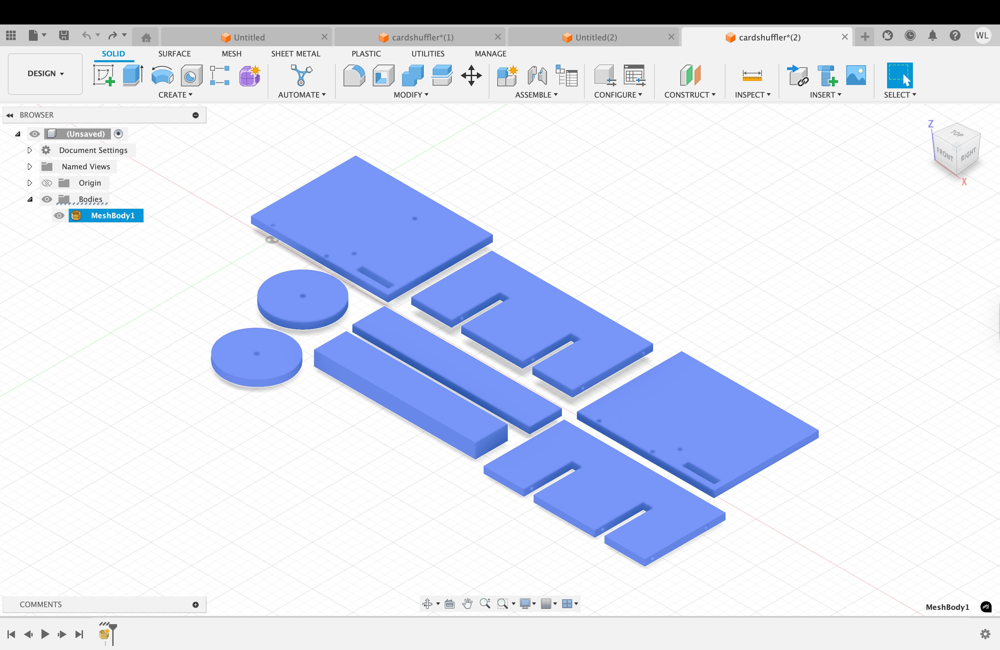
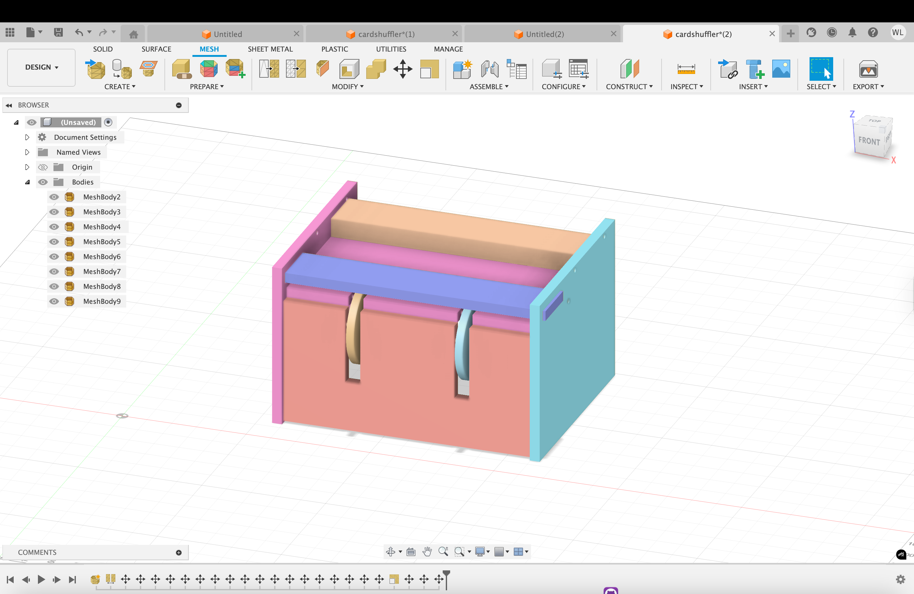

<div class="textcontainer">
<p class="margin"> </p>
<h3>Week 5: 3D Design & Printing</h3>
<p class="margin"> </p>
<h2><b><u><i>Card Shuffler:</h2></u></b></i>
<p class="margin"> </p>
<h4> For my 3d printing project, I decided to make a component/function of my final project. I thought it would be really cool to make an automatic card shuffler as a feature of my game machine at the end. The cards would first shuffle in the machine, then pass out to each player in the room. I found a function on youtube and used it as a blueprint, and continued to model my own machine. I 3d printed some of the components (not all because I wanted to test it and save time on the 3d printer) and plan to 3d print the entire machine at the end.
<p class="margin"> </p>
<p></p>
<p></p> </p>
<h6> <b>Find the link to the blueprint <a href="https://www.youtube.com/watch?v=kTARmpW6t8g">here</a>
<p class="margin"> </p>
<h4> I attached a DC motor onto the back of the machine and 3d printed the wheels/ walls. I attached rubber bands onto the wheels to create enough fiction for the cards to go through. After a few tests, the machine finally worked and was able to push out cards into a middle pile:
<p class="margin"> </p>
<p></p>
<p class="margin"> </p>
<h6><b> In my final project, I'll have two machines launching cards in the middle, therefore shuffling cards evenly. I just wanted to test out the functionality of one of them.
<p class="margin"> </p>
<h4> For my 3d modeling, I used parameters to measure out the card dimensions. Next time im gonna measure out drill holes to make a stable build but this prototype helped me visualize the function of my final design.
<p class="margin"> </p>
<p></p>
<h6><b><a download href='/Users/williamli/Downloads/mini-gear-dc-motor-6v-yellow-1'>Download the STL file
<p class="margin"> </p>
<p></p><b><a download href='./path_to_file.stl'>Download the 3D model file
</div>